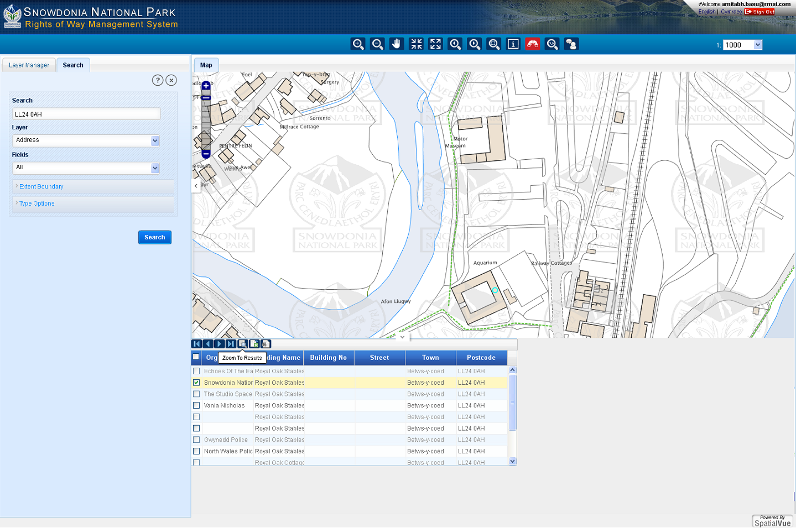
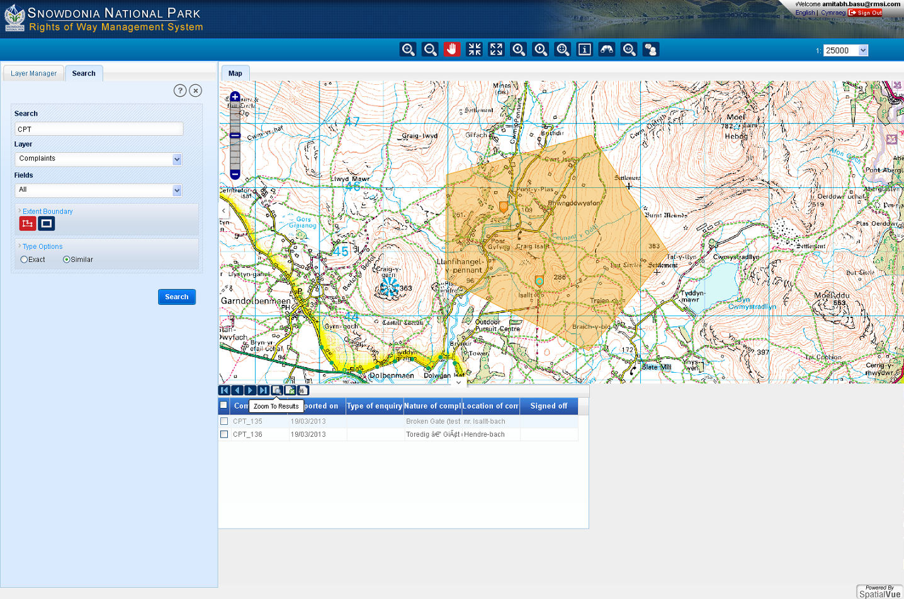

The Search  tool will allow you to find logged complaints or a postal address.
tool will allow you to find logged complaints or a postal address.
To search for a complaint
In the ‘Search’ box, enter the value you want to look up e.g. complaint reference
Select ‘Complaints’ from the drop-down list under ‘Layer’
Select ‘ComplaintID’ from the drop-down list under ‘Fields’
Click on ‘Search’ button. If there is a match a panel will be displayed with the results.
To view a large scale map of the complaint. Select it in the results panel and click on ‘Zoom to Results’
You can search for a word or phrase by entering it into the ‘Search’ box and selecting ‘All’ from fields.
If no options are selected from the ‘Extent Boundary’ or ‘Type Options’ then the system will look for an ‘exact’ match to the word or phrase.
To search for a word or phrase that’s ‘similar’ then select the ‘Similar option from ‘Type Options’
To search for a post code
In the ‘Search’ box, enter the post code you want to look
Select ‘Address’ from the drop-down list under ‘Layer’
Click on ‘Search’ button. If there is a match a panel will be displayed with the results.
To view the address location. Select it in the results panel and click on ‘Zoom to Results’

To search for logged complaints on the map
In the ‘Search’ box, enter the ‘CPT’
Select ‘Complaints’ from the drop-down list under ‘Layer’
Click on ‘Extent Boundary’. The Polygon and Rectangle tool options will be displayed.
Click on the Polygon

tool and draw a polygon by clicking in the map window
Click on ‘Type Options’ and select ‘Similar’
Click on ‘Search’ button. The results will be displayed in the panel below the map.
To view the location of the complaint. Select it in the results panel and click on ‘Zoom to Results’
The Rectangle  tool can be used in a similar way; here all complaints within the drawn rectangle will be listed.
tool can be used in a similar way; here all complaints within the drawn rectangle will be listed.
